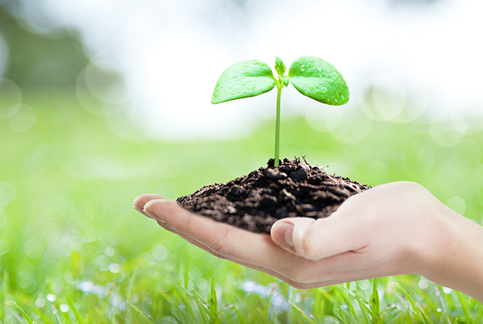
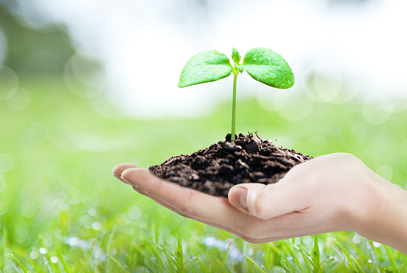

エコ産業
- Home
- 投資環境
- 未来の有望産業
- エコ産業
エコ産業 (Eco-friendly Sector)
 

現代社会は気候変動、環境汚染などにより日常生活のみならず、従来の産業構造や企業経営方式まで変わりつつあります。それによって資源の無分別な浪費を抑制し、環境にやさしい製品を消費しようとする倫理的な消費者が増えており、企業に対しても環境保護と社会的な責任を求める市場の声が高くなっています。
最近、済州にはこのような消費者のニーズを受け入れ、倫理的な消費市場を先取りするために、新しいビジネスモデルの可能性に挑戦する企業が増えています。気候変動時代を迎え、企業の環境と社会への責任は持続可能経営のための必須条件であり、新しい競争力であるからです。
ユネスコ「三冠王」に輝く済州の清浄自然ブランドとアジア市場における高い認知度は、環境にやさしい倫理的なビジネスを目指す企業にとって最適な投資先になるに違いありません。
アップサイクリング産業 (Upcycling Sector)
「生まれ変わるための循環」
済州の資源循環システム構築プロジェクト
済州の資源循環システム構築プロジェクト
500ml三多水ペットボトル16本でエコバックを作るプリーツママ
韓国のリサイクルブランド「プリーツママ」は、暁星、済州島と協力して韓国で初めて100％済州三多水の廃ペットボトルの再生原糸を活用した製品を販売し、市場の注目を集めています。
「生まれ変わるための循環」は済州地域の資源循環システム(Recycle Eco-system)を構築するためのプロジェクトで、捨てられた済州三多水のペットボトルを収集し、リサイクル繊維製造技術を持っている暁星T&Cがペットボトルをリサイクルしたチップを利用してリサイクル繊維の「レジェン・チェジュ(regen®jeju)」を制作します。そしてエコバックを製造するスタートアップのプリーツママ(株)がその繊維で最終製品を作って販売します。
※ レジェン・チェジュ：韓国初の100％済州廃ペットボトル再生ポリエステル
※ クレオラ・レジェン：世界初の100％リサイクル・スパンデックス
※ クレオラ・レジェン：世界初の100％リサイクル・スパンデックス
-
Rucksack
-
Big Bag